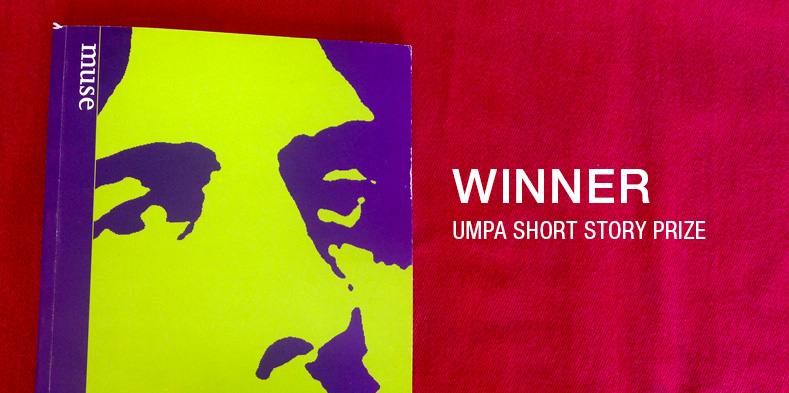
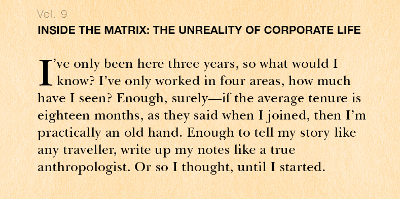
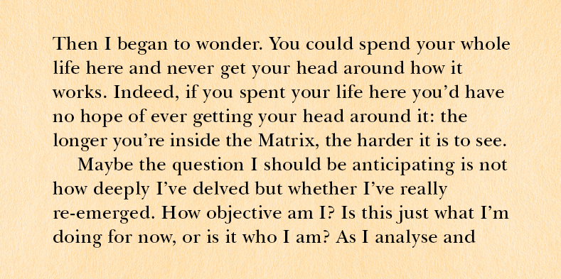

The Art of Navigation
UWA Publishing, 2017
Jeanette Winterson's opening speech:
RCP's John Dee exhibition
The Asking Game
Transit Lounge, 2007

Looking-glass girl
antiTHESIS: deja vu, no.17, 2007, pp.106–13


Monster dogs
UMPA: Muse, 2006, pp.9–14

Ready or not
Island: no.106, 2006, pp.94–6
end sex
Best Australian Short Stories 2004, Black Inc, pp.126–30
end sex
Griffith Review: Making perfect bodies, no.4, 2004, pp.213–16
A generic proposal
Traffic: Serendipity, no.9, 2007, pp.121-35



Inside the Matrix 1 & 2
Cultural Studies Review: Charlatans, no.9 & Panic, no.14

Arcade Publications
2007–2012